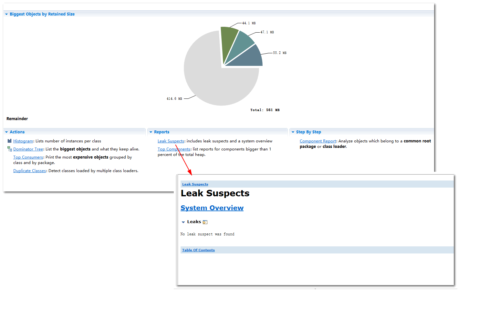
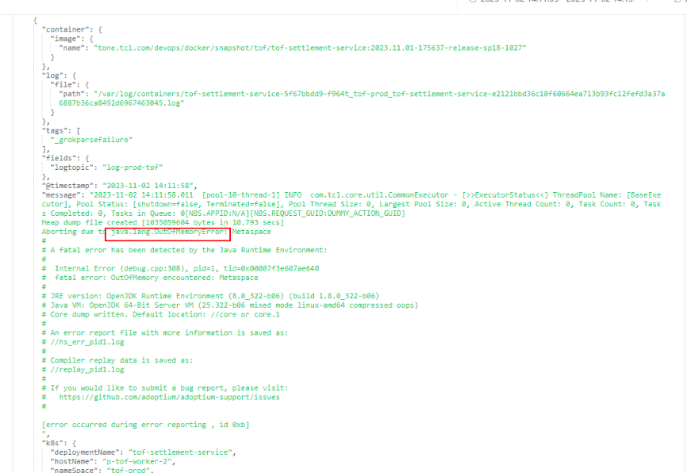
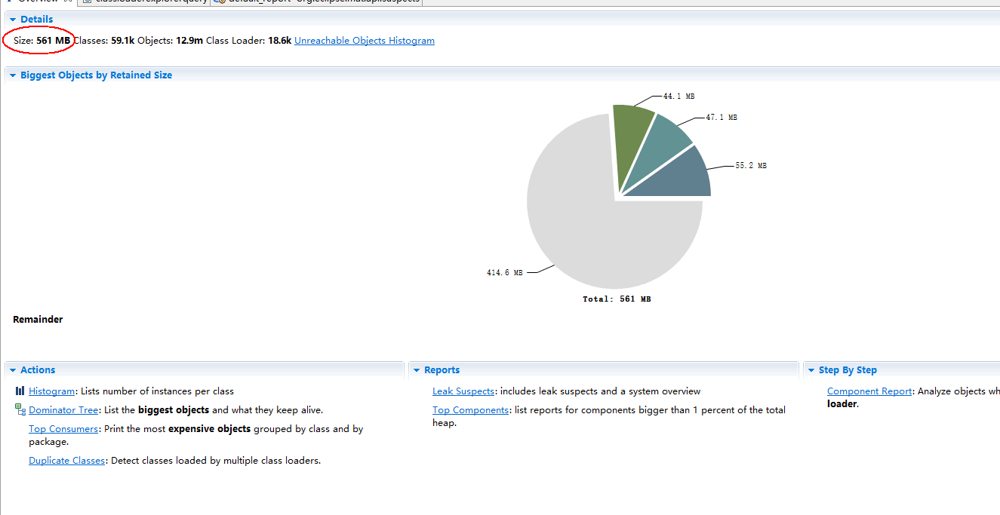
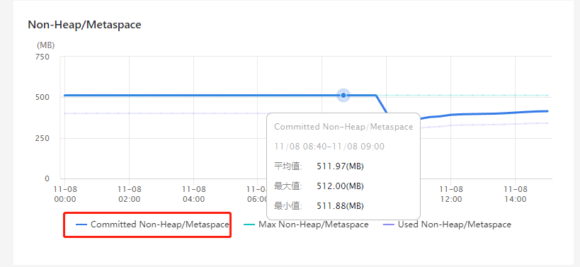
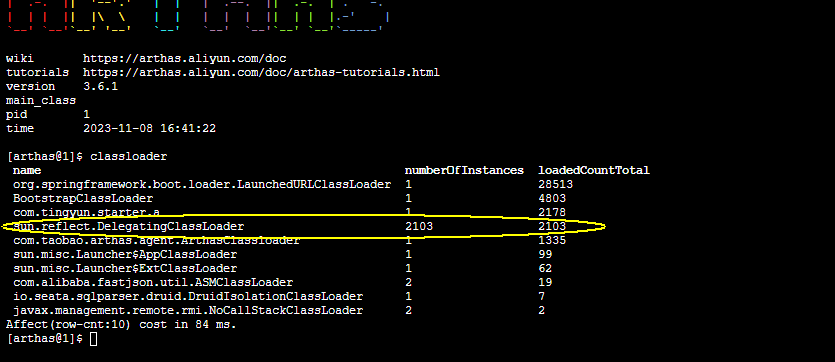

一次线上环境非常规OOM问题的分析
出现OOM的情况是这样的，在业务操作的高峰期，docker容器运行的6个实例，最多的时候可以一周有2-3天都会出现OOM，且一天最多出现3-4次的OOM。
在对这种OOM的dump文件初步分析之后发现，这不是之前出现过的，类似于用户查询某个列表数据，查询返回的数据量较大，且多个用户在同时查询，这种非常明显的，某个业务对象生成了很多，占用了很大的堆内存，导致的OOM的情况。
在出现OOM之后，会生成dump文件并保存，之后jvm进程终止。容器平台的健康检查，监控到服务异常后，会销毁异常的运行实例，并重新拉起健康的运行实例，即相当于重启服务，只不过是销毁掉原来的容器的实例，重新拉起一个。
排查jvm启动参数如下1
java -Dfile.encoding=UTF-8 -server -Xms6144m -Xmx6144m -XX:NewRatio=1 -XX:MetaspaceSize=128m -XX:MaxMetaspaceSize=512m -XX:+AlwaysPreTouch -XX:+UseConcMarkSweepGC -XX:+CMSParallelInitialMarkEnabled -XX:+CMSParallelRemarkEnabled -XX:CMSInitiatingOccupancyFraction=75 -XX:+UseCMSInitiatingOccupancyOnly -XX:+ExplicitGCInvokesConcurrent -XX:+ParallelRefProcEnabled -XX:MaxTenuringThreshold=3 -XX:+UnlockDiagnosticVMOptions -XX:ParGCCardsPerStrideChunk=1024 -XX:ParallelGCThreads=4 -XX:-OmitStackTraceInFastThrow -XX:+PrintGCDateStamps -XX:+PrintGCTimeStamps -XX:+PrintGCDetails -XX:+PrintPromotionFailure -XX:+PrintGCApplicationStoppedTime -XX:-UseBiasedLocking -XX:AutoBoxCacheMax=20000 -XX:+PrintCommandLineFlags -XX:-UseGCLogFileRotation -Xloggc:/jvmlog/settlement-service_java_gc_%p_%t.log -XX:GCLogFileSize=10M -XX:+CrashOnOutOfMemoryError -XX:ErrorFile=/jvmlog/settlement-service_java_error_%p.log -XX:+HeapDumpOnOutOfMemoryError -XX:HeapDumpPath=/jvmlog/settlement-service.hprof -Duser.timezone=Asia/Shanghai -Djava.rmi.server.hostname=127.0.0.1 -Dcom.sun.management.jmxremote.port=7001 -Dcom.sun.management.jmxremote -Dcom.sun.management.jmxremote.authenticate=false -Dcom.sun.management.jmxremote.ssl=false -Djava.net.preferIPv4Stack=true -Dfile.encoding=UTF-8 ...... -jar /settlement-service.jar
注：因为会立即重新拉起应用，拉起的应用启动完成后，服务即可立即恢复正常，健康的可用实例数，就会马上又能满足设置的可用的健康实例数的阈值，所以告警发生和告警恢复，都是间隔很短，几乎是连续出现的。
拿到dump文件之后，使用Eclipse Memory Analyse Toll(MAT工具)进行分析，在MAT的Leak Suspects，也就是造成内存溢出的，可能的内存泄漏原因，预测时，无法给出明确的预测得到的原因。

注：这个预测功能，是MAT工具的预测功能，相当于基于dump文件，自动识别出内存溢出的原因。
1. SimpleDateFormat
进一步分析，可以看到，OOM报错，有明确的线程，如下图：
可以看到，这是一个定时任务，相关的业务处理的线程。
也就是说，最终造成OOM的，是这个线程。
可以进一步跟踪到，抛出OOM溢出的堆栈信息，根据堆栈信息找到对应的代码行如下1
dto.setDate((new SimpleDateFormat("YYYY-MM-DD")).format(date));
SimpleDateFormat是线程不安全的，如果是共享操作，则可能在并发环境下，造成一些问题，但是这个代码，是在类的某个方法中，每次都是new，并不存在共享的问题。
这个线索，可能，可以进一步发掘，并得到问题的原因。但是在此处，线索中断了。
2. 偶然的发现，另外一个线索 - Metaspace OOM
在多次OOM的dump文件中，出现了一次非常明显的Metaspace OOM的提示，但是由于其他OOM并未明细报这个原因，所以一直没有考虑到Metaspace OOM这个方向，且根据上述分析得到的，OOM跟定时任务有关，而定时任务对应的业务逻辑，是有可能造成突然出现业务处理的高峰情况，即系统所有处理的数据量突然增大，系统资源的消耗会突然增加的情况，所以没有考虑到Metaspace OOM这种OOM的情况。

多次OOM的dump文件的分析，发现一个比较明显的特点：线上环境的运行内存是6G，JVM参数也设置了，理论上可以用到6G，但是每次dump的文件大小，均只有1G左右，且dumo文件中，显示的对象的大小，也只有600M左右，远远小于6G。

于是，带着这个疑问，进一步分析，发现发生这种OOM的，均是Metaspace OOM（结合dump情况的一些日志，一开始这些日志并没有拿到，且没有重视这块，一直在分析dump文件）

3. Metaspace OOM的情况的确认
直接在生产环境，查看正常运行（此时还没发生OOM）情况下的Metaspace的使用情况，jvm进程的pid为1。1
2
3
4
5
6
7
8
9
10
11
12
13
14
15
16
17
18
19
20
21
22
23
24
25
26
27
28
29
30
31
32
33
34
35
36
37
38
39
40
41
42
43
44
45
46
47
48
49
50
51
52jmap -heap 1
Attaching to process ID 1, please wait...
Debugger attached successfully.
Server compiler detected.
JVM version is 25.322-b06
using parallel threads in the new generation.
using thread-local object allocation.
Concurrent Mark-Sweep GC
Heap Configuration:
MinHeapFreeRatio = 40
MaxHeapFreeRatio = 70
MaxHeapSize = 6442450944 (6144.0MB)
NewSize = 3221225472 (3072.0MB)
MaxNewSize = 3221225472 (3072.0MB)
OldSize = 3221225472 (3072.0MB)
NewRatio = 1
SurvivorRatio = 8
MetaspaceSize = 134217728 (128.0MB)
CompressedClassSpaceSize = 528482304 (504.0MB)
MaxMetaspaceSize = 536870912 (512.0MB)
G1HeapRegionSize = 0 (0.0MB)
Heap Usage:
New Generation (Eden + 1 Survivor Space):
capacity = 2899116032 (2764.8125MB)
used = 2539904120 (2422.241325378418MB)
free = 359211912 (342.57117462158203MB)
87.60960554751608% used
Eden Space:
capacity = 2577006592 (2457.625MB)
used = 2535723800 (2418.2546615600586MB)
free = 41282792 (39.370338439941406MB)
98.39803312385163% used
From Space:
capacity = 322109440 (307.1875MB)
used = 4180320 (3.986663818359375MB)
free = 317929120 (303.2008361816406MB)
1.2977949357833163% used
To Space:
capacity = 322109440 (307.1875MB)
used = 0 (0.0MB)
free = 322109440 (307.1875MB)
0.0% used
concurrent mark-sweep generation:
capacity = 3221225472 (3072.0MB)
used = 1353705816 (1290.9944686889648MB)
free = 1867519656 (1781.0055313110352MB)
42.024559527635574% used
可以看到，jvm的可用Mestaspace空间最大值，是512M1
2
3
4/
M
91.59
/
打印了当前Metaspace的使用率，可以看到，在服务正常运行的情况下，Metaspace的使用率在90%以上，的确是使用了较多的元数据空间。
进一步，在DEV环境，重新发布应用，在应用刚开始运行的时刻，就用上述命令，打印Metaspace的使用情况，发现也是使用接近90%。
那么，上述的分析，可以确定，发生了这么多次的OOM，很可能大部分情况都是Metaspace OOM。
正式因为OOM是Metaspace OOM，所以每次dump的内存镜像文件，其文件大小，以及其中所显示的对象占用的内存大小，才远远小于JVM可用的内存容量。
4. Metaspace OOM 产生原因的进一步深入分析
Metaspace不足，那么说明加载的class类过多，每一个class类，由对应的classloader加载到jvm中时，都会占用Metaspace。注意一个class，即使会new多个对象实例，并不会再增加Metaspace的使用。new的对象实例，占用的是heap space 堆空间。
虽然Metaspace加载了较多的对象，使用的较多，但是若能够及时的进行内存回收，释放空间，也不会导致OOM。
class类的元信息，由classloader加载到jvm之后，没法得到及时、有效的释放，那么是谁持有了这些class类的元数据信息呢，那就是这些classloader。所以可以进一步推断出，classloader要么是太多（各种各样不同的classloader），要么是单个classloader加载的类（不同的class）太多。
使用阿里Arthas工具，打印classloader信息：

可以看到，类加载器classloader，最多的，是DeletgatingClassLoader。DeletgatingClassLoader是跟反射相关的classloader。
使用MAT工具，查看classloader的具体的信息
可以看到，有非常多的，sun.reflect.DelegatingClassLoader的classloader的对象实例。
结合前面得到的结论，发生OOM的情况，大部分是定时任务运行触发的，在定时任务拉起处理线程，进行业务处理时，存在大量使用了反射的情况，因此产生了较多的classloader，且这种反射所加载的对象，没办法重用classloader，所有classloader的数量也很庞大。
- 在MAT中，查看某一个classloader所引用的对象的引用树
- 定位到CachedIntrospectionResults对象，这是一个Spring中，BeanUtils拷贝bean的方法相关的类。
- 随机点开一些classloader，查看其引用树，还有一些是json序列化相关的，这里其实底层也是用到了反射
- 关于反射，导致的OOM问题，网上有一篇文章，提到了如下内容
1
当使用JavaBean的内省时，使用Introspector，jdk会自动缓存内省信息（BeanInfo），这一点是可以理解的，毕竟内省通过反射的代价是高昂的。当ClassLoader关闭时，Introspector的缓存持有BeanInfo的信息，而BeanInfo持有Class的强引用，这会导致ClassLoader和它引用的Class等对象不能被回收。
简单点说，就是在反射处理时，为了优化性能，会使用缓存。但是这会带来副作用，有可能会导致OOM，原因是：当ClassLoader使用完关闭时，缓存仍然持有Class的强引用，这会导致ClassLoader和它引用的Class等对象不能被回收。
至此总结如下：
因为很多代码处理逻辑的底层，使用了反射（包括上面提到的spring的BeanUtils的拷贝对象，json的序列化），而反射在大量使用时，因为使用了缓存的原因，导致ClassLoader和它引用的Class等对象不能被回收，进一步导致了元数据空间Metaspace被使用完，在总的已使用内存，远小于JVM的总的可用内存的情况下，发生了Metaspace的OOM。
5. 优化方案
优化业务处理逻辑，避免瞬间的业务处理量急剧增加（这里除了数据量的因素，还需要考虑业务处理逻辑的的性能消耗的维度），或者才有简单直接的方法————减少每次处理的数据量，分多次处理
减少代码中，使用反射的情况，或者对反射进行优化；
对服务进行拆分，拆分为多个服务中心，减少每个运行的JVM中的加载的对象元数据量的大小；
增加jvm运行参数中，优化MaxMetaspaceSize，增加其大小，或者直接去掉该参数，即去掉最大可用元数据空间的限制。
其实，这也从另一个方面说明了，jvm参数在大多数情况下，不需要人为设定（非必需不优化原则，防止过度优化、提前优化），由系统自己确定最优的参数即可，这在jdk的高版本中，尤为明显。
参考资料：
1、java内省优化工具类BeanUtils（优化内省并防止内存泄漏）
https://www.jianshu.com/p/220512f4b2d4
2、Java元空间Metaspace内存溢出排查方法总结
http://javakk.com/790.html
3、大量DelegatingClassLoader类加载器，导致Perm区溢出
https://blog.csdn.net/hellozhxy/article/details/80559419
4、记一次Metaspace OutOfMemoryError问题排查记录
https://baijiahao.baidu.com/s?id=1737010123483039347
5、一次由热部署导致的 OOM 排查经历
http://mp.weixin.qq.com/s?__biz=MzU4MDUyMDQyNQ==&mid=2247514041&idx=1&sn=bad70891502ce76027063db9b687c72b&chksm=fd57673fca20ee297818d44b5c55ac487992a8733de96500cd334ddced62bbb80ef23dfac026&mpshare=1&scene=24&srcid=1108xEPyLzfctRJlxjZ1NJvI&sharer_shareinfo=497fd1c4869477c567ef40efe77d921b&sharer_shareinfo_first=497fd1c4869477c567ef40efe77d921b#rd
如果您喜欢此博客或发现它对您有用，则欢迎对此发表评论。 也欢迎您共享此博客，以便更多人可以参与。 如果博客中使用的图像侵犯了您的版权，请与作者联系以将其删除。 谢谢 ！